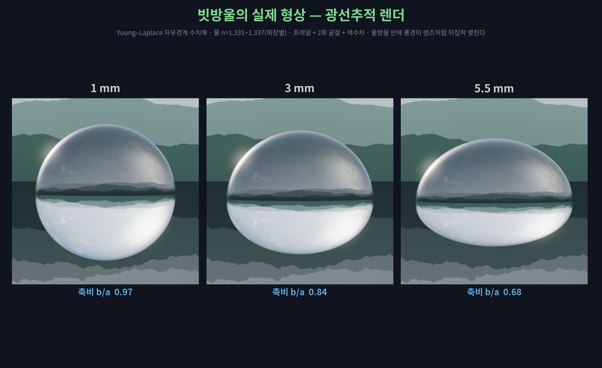
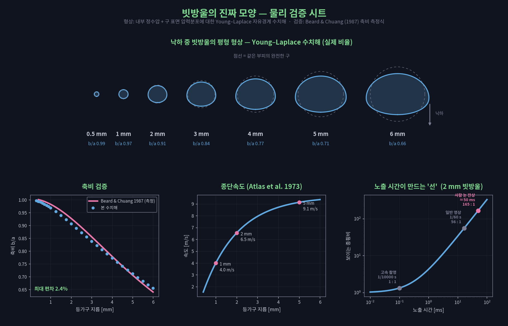

하늘에서 떨어지는 빗방울은 어떤 모양일까?
비를 그려 보라고 하면 사람들은 두 가지를 그린다. 길쭉한 사선, 그리고 위가 뾰족한 물방울. 둘 다 실제 빗방울의 모습이 아니다.
1분 · 소리를 켜고 보세요
①사선은 모양이 아니라 궤적이다
먼저 사선부터. 이건 틀린 그림이 아니라, 애초에 모양이 아니다.
지름 2 mm 빗방울의 종단속도는 초속 6.5 m다. 그런데 사람 눈은 빛을 한 순간에 찍지 않고 20분의 1초 동안 모아서 본다. 그 사이 빗방울은 30 cm를 지나간다. 지름 2 mm짜리가 30 cm 길이로 늘어나면 종횡비는 165 대 1이다.
| 노출 시간 | 맺히는 길이 | 보이는 종횡비 |
|---|---|---|
| 1/10000 초 (고속 촬영) | 2.7 mm | 1.3 : 1 |
| 1/60 초 (일반 영상) | 11 cm | 56 : 1 |
| 1/20 초 (사람 눈의 잔상) | 33 cm | 165 : 1 |
게다가 사람 눈의 각분해능은 약 1각분이다. 눈앞 60 cm에 2 mm 빗방울이 정지해 있어도 형태를 겨우 분간할까 말까인데, 그게 초속 6.5 m로 지나간다. 고속 촬영이 나오기 전까지 인류는 빗방울의 모양을 볼 방법이 아예 없었다.
②진짜 모양 — 위는 둥글고 아래가 눌린다
종단속도로 떨어지는 물방울은 가속하지 않는다. 그래서 물방울 정지좌표계에서 내부의 정수압 구배와 외부의 공력 압력이 표면장력과 균형을 이룬다. 이 균형이 Young–Laplace 방정식이고, 그 자유경계 문제를 직접 풀면 아래 형상이 나온다.

| 등가구 지름 | 종단속도 | 축비 (계산) | 축비 (측정식) | 편차 |
|---|---|---|---|---|
| 1 mm | 4.0 m/s | 0.969 | 0.983 | −1.4% |
| 3 mm | 8.0 m/s | 0.839 | 0.856 | −2.0% |
| 5 mm | 9.1 m/s | 0.712 | 0.706 | +0.8% |
지름 1 mm에서는 거의 완벽한 구다. 커질수록 아래가 눌려서, 5 mm에서는 세로가 가로의 0.71배까지 납작해진다.
③눈물방울은 앞뒤가 뒤집혀 있다
그럼 우리가 그리는 눈물방울은 왜 틀렸을까. 여기서 재밌는 모순이 나온다.
사람들이 그리는 눈물방울은 뾰족한 쪽이 위다. 그런데 「빠른 건 앞이 뾰족하다」는 유선형 직관대로라면, 진행 방향인 아래가 뾰족해야 한다.
눈물방울 이미지의 출처는 셋이다. 수도꼭지에서 물방울이 떨어져 나오는 순간(레일리–플래토 불안정성)의 잔상, 유선형 직관, 그리고 일기예보 아이콘이 스스로를 복제한 결과다. 아이는 비를 관찰하기 전에 비 그림부터 배운다.
④5 mm를 넘으면 터진다
커지는 데에는 한계가 있다. 지름이 5 mm를 넘으면 바닥이 파이면서 낙하산처럼 부풀고, 표면장력이 공기의 압력을 버티지 못해 여러 개의 작은 방울로 쪼개진다. 그래서 자연의 빗방울은 5~6 mm를 넘지 못한다.
정리하면 하나의 싸움이다. 작을수록 표면장력이 이겨서 구, 커질수록 공기가 이겨서 납작.
⑤그리고 가만히 있지도 않는다
이 모양조차 고정이 아니다. 빗방울은 난류와 충돌로 계속 들뜨면서 편구와 장구 사이를 오간다. 가장 낮은 진동 모드(n = 2)의 진동수는 레일리(1879)의 액적 진동식으로 구한다.
f = (1/2π) √( n(n−1)(n+2) · σ / ρa³ )n = 2, 지름 4 mm → 43 Hz
초당 마흔세 번이다. 30 fps로는 담을 수 없어서 아래 영상은 20배 느리게 보여준다.
어떻게 확인했나
형상
- 내부 정수압
ρ_w·g·z와 구 표면의 압력분포에 대한 Young–Laplace 자유경계 문제를 호길이 매개화 경계값 문제로 수치해석. - 결과 축비를 Beard & Chuang(1987) 측정 맞춤식과 대조 — 최대 편차 2.4%.
- 종단속도는 Atlas et al.(1973) 경험식.
렌더
- 회전체 부호거리장을 스피어 트레이싱. 프레넬(Schlick) 분기 후 굴절 2회, 전반사 처리.
- 파장별 굴절률(656 / 589 / 486 nm)로 색수차 재현.
- 법선은 격자 유한차분이 아니라 자오선 프로파일에서 해석적으로 계산 — 굴절상의 격자 무늬를 없애기 위해.
소리
- 빗소리는 노이즈 필터링이 아니라 물방울 하나하나를 쌓아서 합성.
수면에 갇힌 공기 방울의 미네르트 공명
f ≈ 3.26/d[kHz·mm]을 크기 분포에 따라 부여.


참고
- Beard, K. V. & Chuang, C. (1987). A New Model for the Equilibrium Shape of Raindrops. J. Atmos. Sci., 44(11), 1509–1524.
- Atlas, D., Srivastava, R. C. & Sekhon, R. S. (1973). Doppler Radar Characteristics of Precipitation at Vertical Incidence. Rev. Geophys., 11(1), 1–35.
- Pruppacher, H. R. & Pitter, R. L. (1971). A Semi-Empirical Determination of the Shape of Cloud and Rain Drops. J. Atmos. Sci., 28(1), 86–94.
- Rayleigh, Lord (1879). On the Capillary Phenomena of Jets. Proc. R. Soc. Lond., 29, 71–97.